Mobil Versiya
A+ A A-
 
pyc
pyc

O'zR FA akademik O.S.Sodiqov nomidagi Bioorganik
kimyo instituti 1977-yil tashkil topgan.2012-yil uning tarkibiga
Biokimyo instituti va Fiziologiya va biofizika institutining ilmiy
potensiali qo'shilgan.Institut bugungi kunda Bioorganik kimyo
sohasi bo'yicha faoliyat yurutib kelayotgan O'rta Osiyoda
yagona markaz hisoblanadi...
Obid Sodiqovich Sodiqov taniqli olim-fan arbobi
vaorganik ximik.Sobiq ittifoq Fanlar Akademiyasi
va O'zbekiston SSR Fanlar Akademigi,Fan va
Texnologiya bo'yicha O'zbekiston Respublikasida
xizmat ko'rsatgan fan arbobi mukofoti,Sotsialistik
mehnat qahramoni unvoni sohibi...
"Bioorganik kimyoning muhim
muommlari"mavzusida xalqaro
ilmiy anjuman
2013-yilning 15-16 noyabr kunlari
Toshkent shahrida "Bioorganik
kimyoning muhim muammolari"
mavzusida xalqaro anjuman bo'lib o'tdi...
23.06.2016
"Bioorganik kimyoning muhim
muommlari"mavzusida xalqaro
ilmiy anjuman
23.06.2016
"Bioorganik kimyoning muhim
muommlari"mavzusida xalqaro
ilmiy anjuman
23.06.2016
"Bioorganik kimyoning muhim
muommlari"mavzusida xalqaro
ilmiy anjuman
23.06.2016
"Bioorganik kimyoning muhim
muommlari"mavzusida xalqaro
ilmiy anjuman
2013-yilning 15-16 noyabr kunlari
Toshkent shahrida "Bioorganik
kimyoning muhim muammolari"
mavzusida xalqaro anjuman bo'lib o'tdi...
23.06.2016
"Bioorganik kimyoning muhim
muommlari"mavzusida xalqaro
ilmiy anjuman
23.06.2016
"Bioorganik kimyoning muhim
muommlari"mavzusida xalqaro
ilmiy anjuman
23.06.2016
"Bioorganik kimyoning muhim
muommlari"mavzusida xalqaro
ilmiy anjuman
23.06.2016
Проведение
генетических
исследований
Исследование веществ
на автоматическом
4-кружном
дифрактометре
XCALIBURTM-R
Исследование веществ
на масс-спектрометре
Agilent 6520,“Tanberg
Instruments LLC”
Q-TOF
Исследование веществ на
бинокулярном микроскопе
с цифровой камерой
LEICA (Швейцария)
www.gov.uz
www.energonazorat.uz
www.uzbekenergo.uz
Bosh menyu
Yangiliklar
Institut tarixi
Bo'limlar
Interaktiv xizmatlar
Ixtisoslashgan kengash
Bog'lanish
© Ba’zi huquqlar mualliflik huquqi bilan cheklangan. Sayt Ermaxamatov Xurshidbek tomonidan tayyorlangan